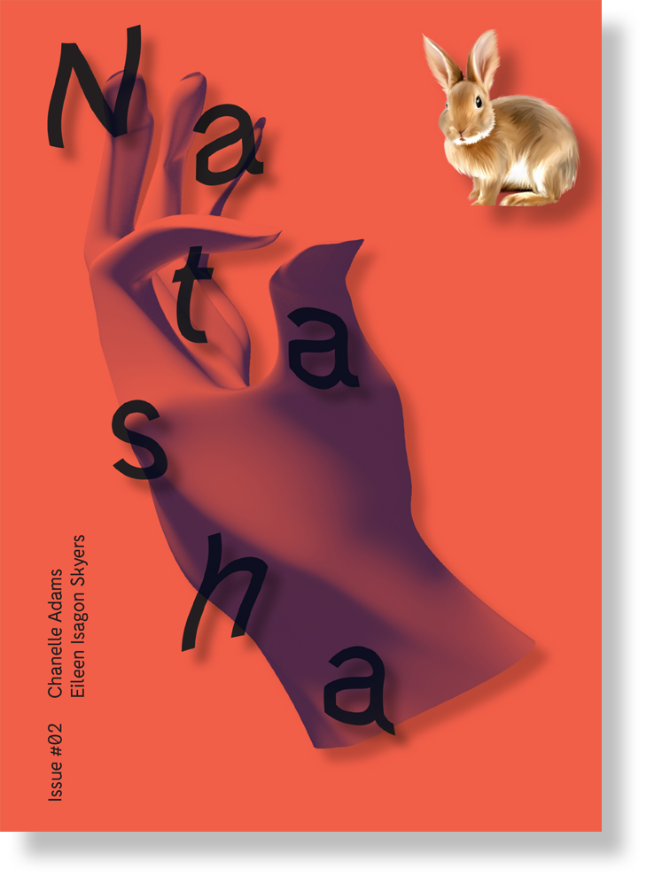
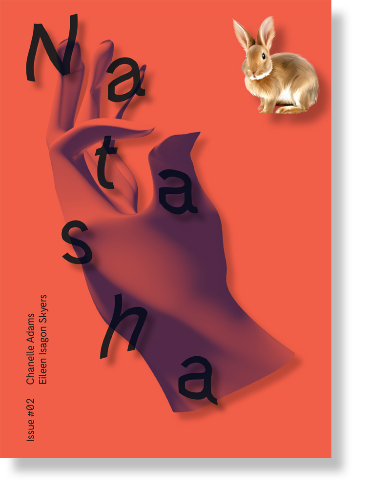
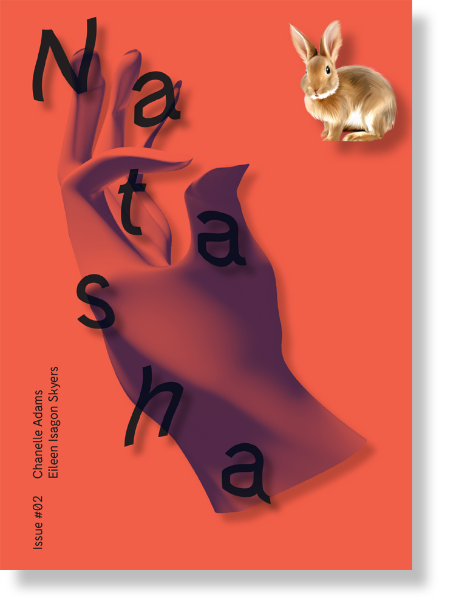
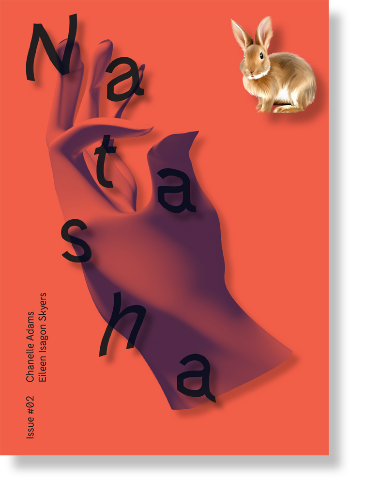
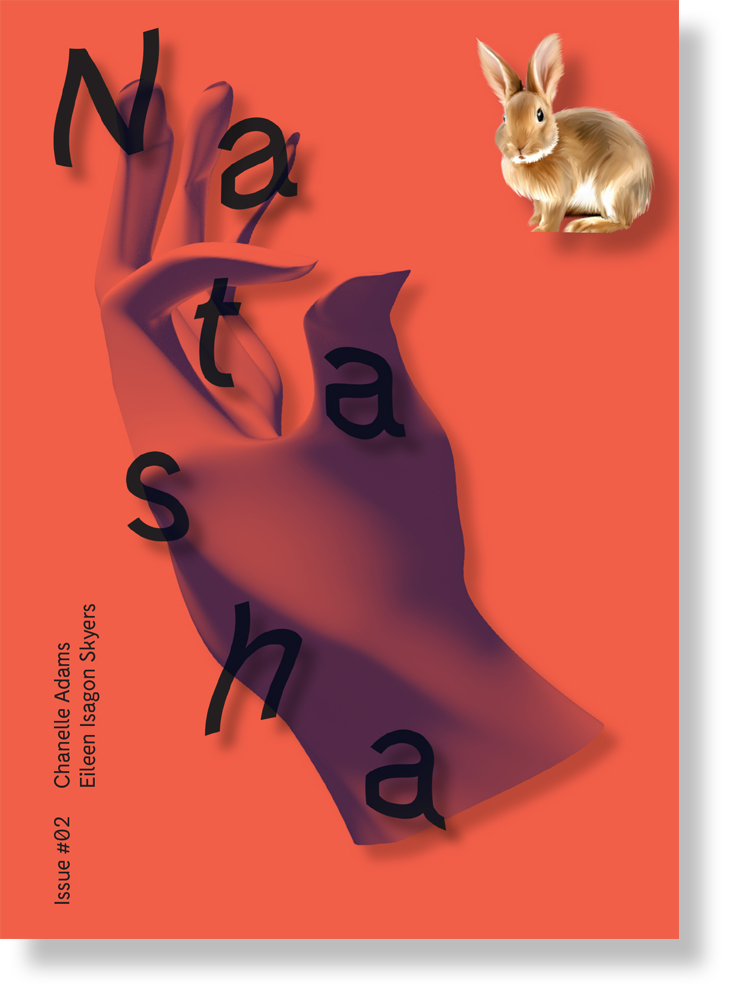

Index
About
Mail
☜
☞
#02

Natasha
Issue
#02
Order (
$10.00
)
Chanelle Adams
MATERIAL ENDS AND INVISIBLE PORTALS
Eileen Isagon Skyers
EYES WITHOUT A FACE
Edited by Erin Prinz Schwartz
and Elizaveta Shneyderman
Design by
Alec Mapes-Frances
3D illustration by
Rio Roye
 


